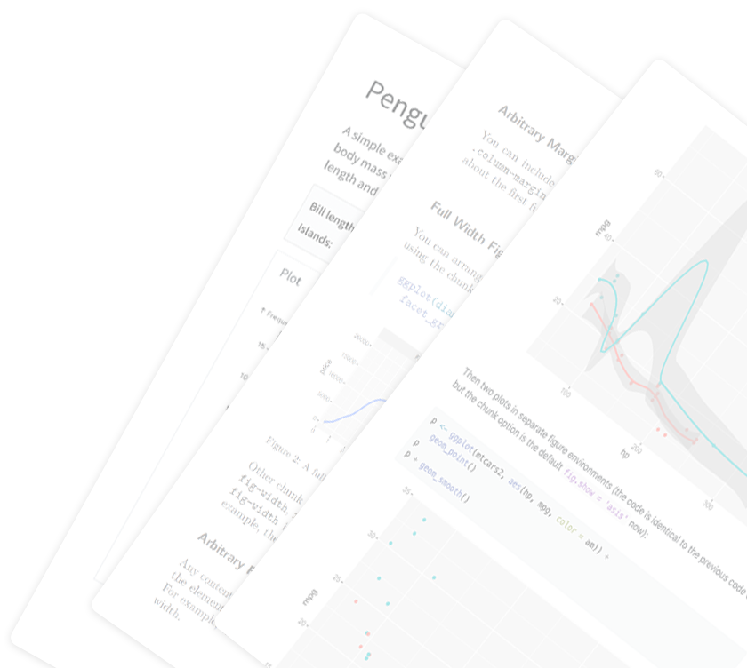

This research work has been done in collaboration with Dr. Thomas Wahl, Dr. Alejandra Enriquez, and Dr. Md. Mamunur Rashid. The website is developed by Javed Ali, and it is a part of the National Academy of Sciences funded project “The New First Line of Defense: Building Community Resilience through Residential Risk Disclosure” deliverable.
If you are a U.S. Gulf coast resident and want to know your houses/communities risk to hazards, check out our HazardAware tool to get information on natural hazard loss, frequency, and mitigation for residential buildings at a specific address.
We collected data for socioeconomic impacts of natural hazards in the US and their hydrometeorological drivers.
We processed the data to create a database of natural hazards and their associated hydrometeorological drivers and their socioeconomic impacts.
We developed a novel methodology for assessing compound impacts of hydrometeorological drivers associated with natural hazards.
We analyzed the data to determine the impact and role of hydrometeorological drivers on socioeconomic impacts of natural hazards.
We created visualizations based on our results to understand the contributions of hydrometeorological drivers to socioeconomic impacts of compound extreme events.
We analyzed all data to better understand what drivers are involved in each hazard recorded in SHELDUS, as well as knowing how often the impacts result from a compound event.
This research is funded by the National Academies of Science Gulf Research Program’s Thriving Communities Grant, “The New First Line of Defense: Building Community Resilience through Residential Risk Disclosure”, grant number 200010880.